Что делает каждая кнопка¶
Панель открывается кнопкой QC Bake на полке Mutaform. Она докируемая: можно оставить плавающей, а можно пристыковать к боковой панели Maya. Порядок разделов здесь тот же, что в панели сверху вниз.
Главные кнопки¶
Две кнопки и строка под ними, которая заранее говорит, что произойдёт.
Create Namepair¶

Переименовывает выделенные меши в пару: <имя>_low и <имя>_high.
Когда пригодится. Основное действие. Выделите меши ассета и нажмите — порядок выделения не важен, роли аддон определит сам.
Что получится. При двух мешах плотный становится хаем. При трёх и больше низкополигональным будет один, остальные получат нумерацию: asset_high_01, asset_high_02. Какой именно окажется лоу, зависит от Track Selection Order: с ним — выделенный последним, без него — самый лёгкий меш. Имя берётся от лоу, старый суффикс из него вырезается. Неймспейсы сохраняются: объект из chair:parts останется в нём же.
Когда неактивна. Выделено меньше двух мешей. Считаются только меши: кривые, локаторы и камеры в счёт не идут.
Обратите внимание
Переименование — единственное, что делает кнопка. Геометрию она не трогает никогда.
Swap High / Low¶

Меняет роли пары местами.
Когда пригодится. Когда автоматика ошиблась. Так бывает с плотным лоу против грубого блокаута: по треугольникам лоу оказывается тяжелее, хотя по смыслу он лоу.
Что получится. Быстрее, чем переименовывать руками: имена меняются местами вместе с суффиксами.
Когда неактивна. В выделении нет готовой пары: не нашлось объекта с суффиксом low и объекта с суффиксом high.
Строка под кнопками¶

Говорит, что произойдёт при нажатии, ещё до нажатия.
Когда пригодится. Читать её стоит всегда: она заранее показывает, кого аддон считает хаем. Если написанное расходится с задуманным, поможет Swap High / Low или галка Track Selection Order.
Что получится. Без выделения — «Nothing selected». С двумя мешами — сколько выделено и что плотный станет хаем.
Visibility — показать и скрыть¶
Показывает и прячет объекты по ролям, по всей сцене сразу. Работает через display layers Maya.
Строка роли (High, Low, Cage)¶
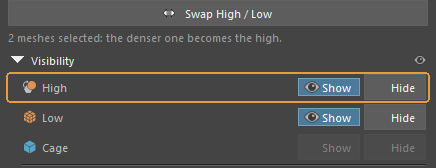
Показывает и прячет все объекты роли по всей сцене, независимо от выделения.
Когда пригодится. Чтобы посмотреть на лоу без нависающего хая — и обратно.
Что получится. Нажатая кнопка подсвечивается. Роль, которой в сцене нет, недоступна: кейдж в пустой сцене так и останется серым.
Когда неактивна. В сцене нет объектов с таким суффиксом. Сразу после Create Namepair строки High и Low оживают, а Cage — только если кейдж действительно есть.
Обратите внимание
Сделано на display layers, и это важнее, чем кажется: аддон не затирает видимость, выставленную вами руками. Включение роли возвращает то, что было, а не то, что решил инструмент.
Строка All¶
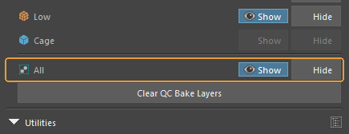
То же самое, но сразу для всех ролей.
Когда пригодится. Быстро вернуть сцену в исходный вид после того, как половина спрятана.
Clear QC Bake Layers¶

Убирает слои, которые аддон завёл для переключения видимости.
Когда пригодится. Перед отдачей сцены, чтобы не тащить служебные слои дальше. На сами объекты и их имена это не влияет — только на слои.
Utilities — работа со сценой целиком¶
Объединение далеко разнесённых пар в общие группы запекания и раскладка аутлайнера.
Prefix¶
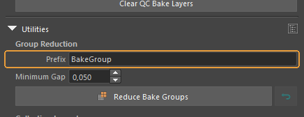
Начало имени, которое получат объединённые группы запекания.
Когда пригодится. Меняйте, если в проекте свои правила именования. Из него собираются имена вида BakeGroup_01_low.
По умолчанию: BakeGroup
Minimum Gap¶

Наименьшее расстояние между габаритными коробками, при котором две пары разрешено объединять в одну группу.
Когда пригодится. Чем больше значение, тем осторожнее объединение и тем больше групп останется.
По умолчанию: 0,050
Обратите внимание
Смысл в том, что лучи с одного ассета не должны попасть в хай другого. Стоящие вплотную пары объединять нельзя — запечётся чужая геометрия.
Reduce Bake Groups¶
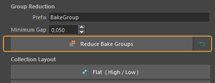
Объединяет разнесённые в пространстве пары в меньшее число групп запекания. Стрелка справа — возврат к прежним именам.
Когда пригодится. Когда в сцене десяток мелких ассетов и печь каждый отдельным проходом расточительно. Разнесённые достаточно далеко не проецируются друг в друга, значит могут делить один проход.
Что получится. Объекты получают общее имя группы: BakeGroup_01_low, BakeGroup_01_high_01 и так далее. Неполные пары пропускаются, сколько их было — аддон сообщает.
Обратите внимание
Каждое переименование записывается в сцену, поэтому Restore работает и завтра, когда стек отмены Maya давно пуст. Откатывается последний прогон; запустите Reduce дважды — первый набор имён потеряется.
Flat ( High / Low )¶
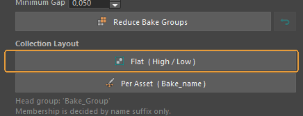
Раскладывает аутлайнер по ролям: группы High, Low, Cage под общей Bake_Group.
Когда пригодится. Когда удобнее видеть всё низкополигональное вместе.
Обратите внимание
Участники определяются только по суффиксу имени, поэтому пропы и вспомогательные меши не затрагиваются. Геометрия при группировке не сдвигается.
Per Asset ( Bake_name )¶

Раскладывает аутлайнер по парам: каждый ассет получает группу Bake_<имя>.
Когда пригодится. Когда ассетов много и важно видеть, у какого пара неполная.
Что получится. Группа помечается цветом: зелёная — пара полная, можно печь; красная — участника не хватает или внутри лежит посторонний объект. Видно в аутлайнере сразу, без раскрытия.
Naming — какими суффиксами помечать¶
Convention¶
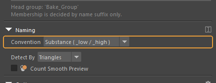
Набор суффиксов, которыми помечаются роли.
Когда пригодится. Ставьте тот, что ждёт ваш запекатель. Выбор влияет не только на переименование: по этим же суффиксам аддон ищет объекты для Visibility и для обеих утилит, так что после смены пресета прежние объекты для него перестают существовать.
По умолчанию: Substance ( _low / _high )
Detect By¶
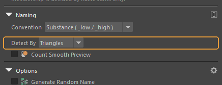
Признак, по которому сравнивается плотность сеток.
Когда пригодится. Меняйте, если по треугольникам роли определяются неверно. Есть ещё полигоны и вершины.
По умолчанию: Triangles
Count Smooth Preview¶

Считать ли сглаженную сетку вместо базовой.
Когда пригодится. Включите, если работаете с включённым smooth preview — клавишей «3».
По умолчанию: выключено
Обратите внимание
Этого пункта нет в версии для Blender, он понадобился из-за Maya: polyEvaluate не видит smooth mesh preview. Без галки хай, который вы смотрите сглаженным, считается по базовой сетке — и легко оказывается «легче» лоу.
Options — поведение при переименовании¶
Generate Random Name¶

Даёт паре случайное имя вместо имени исходного объекта.
Когда пригодится. Когда исходные имена — мусор вроде pCube12 и придумывать своё некогда.
По умолчанию: выключено
Also Rename Shape Node¶

Переименовывает вместе с трансформом и его shape-ноду.
Когда пригодится. Оставьте включённым. Иначе в сцене остаются barrel_low с shape pCubeShape1 внутри, и в экспортированном FBX это видно.
По умолчанию: включено
Detect Cage¶
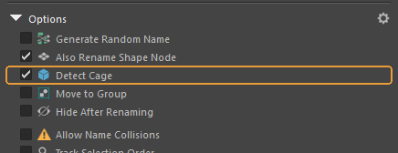
Исключает из сравнения объект, чьё имя уже заканчивается на суффикс кейджа.
Когда пригодится. Кейдж нужно назвать заранее — хотя бы что-угодно_cage. Угадывать кейдж по геометрии аддон не пытается.
По умолчанию: включено
Move to Group¶
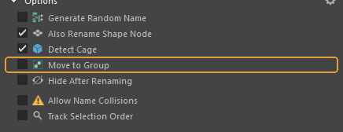
Сразу после переименования складывает пару в группу.
По умолчанию: выключено
Hide After Renaming¶
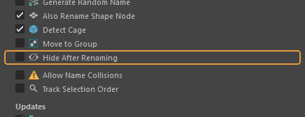
Прячет хай сразу после того, как пара создана.
Когда пригодится. Удобно, когда хай нужен только для запекания и мешает смотреть на лоу.
По умолчанию: выключено
Allow Name Collisions¶

Разрешает переименование, когда нужное имя уже занято.
По умолчанию: выключено
Обратите внимание
Именно так в сцене заводятся barrel_low1. Для запекателя это уже другое имя, и пара разваливается. Включать стоит, только когда точно понятно, почему имя занято.
Track Selection Order¶
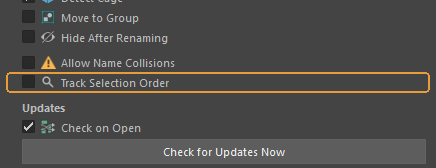
Учитывать порядок выделения: последний выделенный считается низкополигональным.
Когда пригодится. Включите, когда роли надо задавать самому, а не отдавать на откуп счётчику треугольников.
По умолчанию: выключено
Обратите внимание
Ещё одно отличие от Blender: там есть активный объект, у Maya его нет. Галка включает у Maya отслеживание порядка выделения, и до этого момента порядок попросту не запоминается.
Updates — обновления¶
В Maya нет репозитория аддонов, поэтому проверка обновлений встроена в сам инструмент.
Check on Open¶
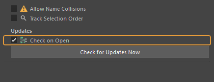
Проверять наличие новой версии при каждом открытии панели.
Что получится. Проверка идёт в фоновом потоке и молчит, если не удалась. Когда версия новее найдена, сверху панели появляется полоса с кнопкой Install. Сама она ничего не ставит.
По умолчанию: включено
Check for Updates Now¶
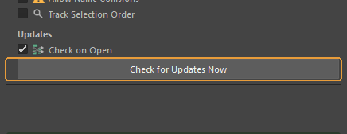
Проверить обновления немедленно.
Когда пригодится. Когда автопроверка выключена или хочется убедиться прямо сейчас. В отличие от фоновой, эта проверка сообщает и об неудаче.
Обратите внимание
По кнопке Install архив скачивается, сверяется с контрольной суммой, распаковывается и подменяет папку — без перезапуска Maya. Прежняя версия хранится, пока новая не загрузится, поэтому сломанный релиз откатывает себя сам.
Строка состояния¶
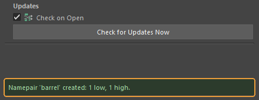
Итог последнего действия внизу панели.
Когда пригодится. Сюда стоит смотреть первым делом, если кажется, что ничего не произошло: здесь и «Namepair 'barrel' created: 1 low, 1 high», и причина отказа.
Страница собрана из файла content/qc-bake-maya.ru.yml. Снимки сделаны в QC Bake for Maya 1.2.4.